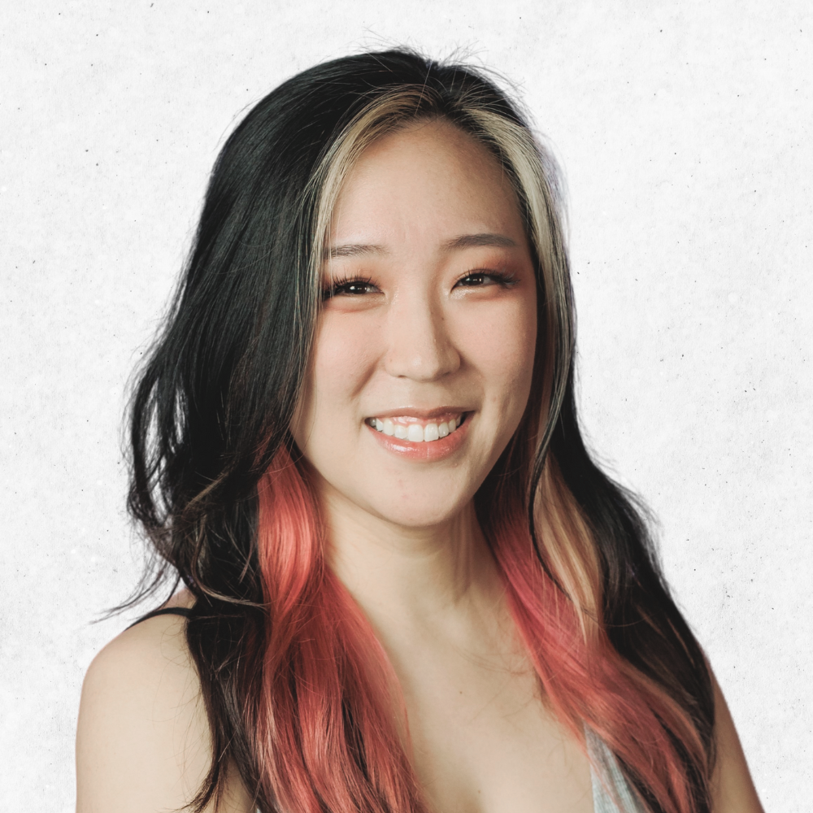

Hello, I'm Joanna!
I am an upbeat and data driven marketing professional who blends creative storytelling with technical strategy. I specialize in building highly engaged communities, executing complex live logistics and diving into marketing operations to optimize budgets. By combining my passion for custom visual design with technical skills like HTML, CSS, and audience analytics, I build scalable workflows that increase organic traffic and turn passive audiences into loyal followers.
education
B.S. Marketing
Minor in Web & Digital Design
Certificate in Digital Marketing
3.9 GPA, Dean's List
experience
Digital Marketing Intern
Search Engine Optimizer and Marketing Lead
Social Media Specialist
Live Streaming Content Creator
Social Media Manager
International English Teacher

Marketing
📍 Severn, Maryland
technical skills
interests
my process
- Research & Strategy: Analyzing audience behavior and market trends.
- Creative Execution: Designing highly engaging, brand-aligned visual content.
- Optimization: Tracking performance metrics to maximize community growth and ROI.